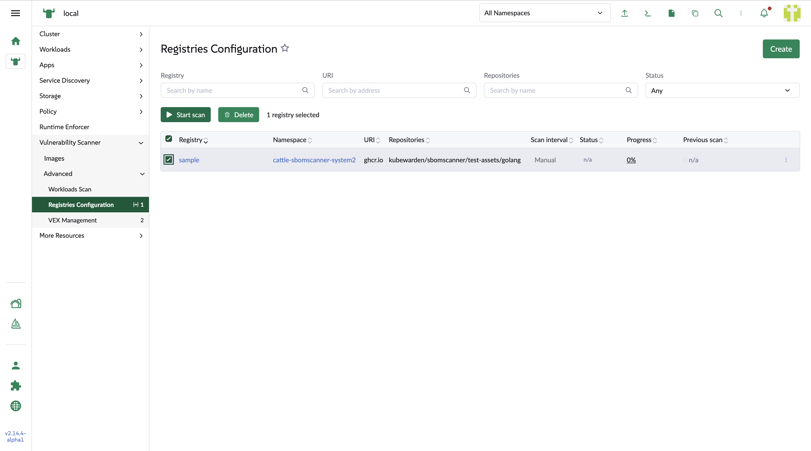
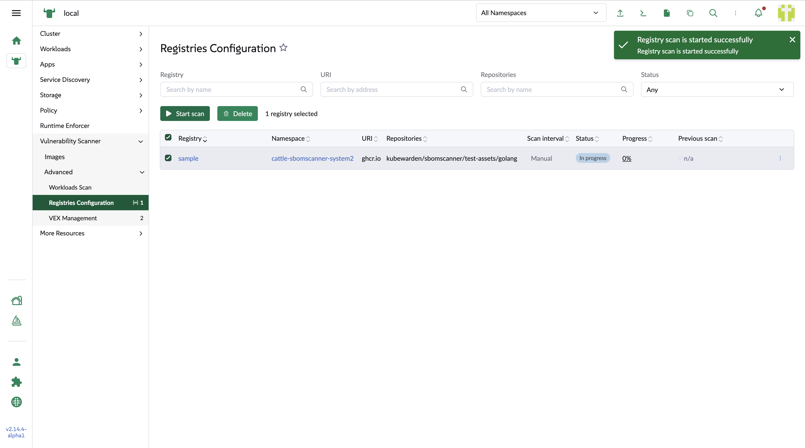
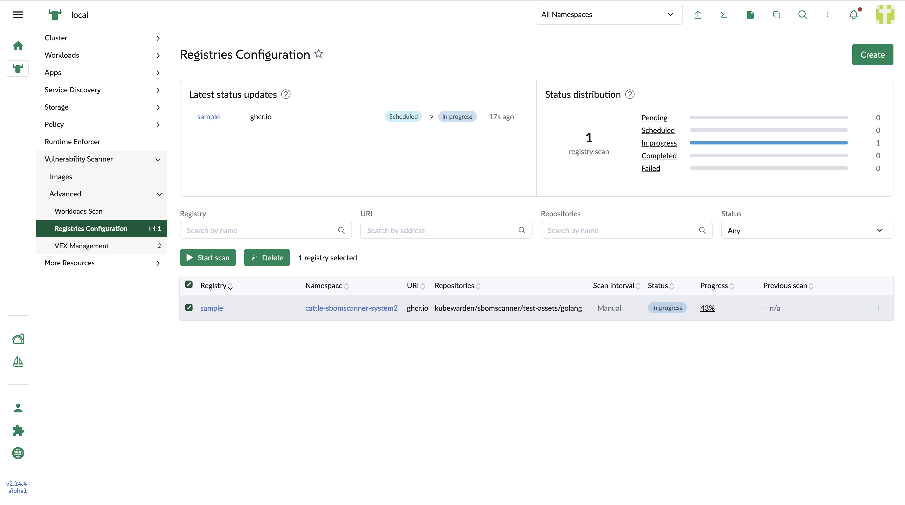

Registry List
The registry configuration list shows every configured registry, with per-column filters.
List columns
- Registry
-
The registry name. Links to the registry detail page.
- Namespace
-
The namespace the registry belongs to. Links to the namespace list page in Rancher.
- Status
-
One of the following:
-
Pending— the registry is created but no scan has started. -
Scheduled— a scan has just been started and the backend hasn’t yet reportedIn process. -
In process— the backend has reportedIn process, along with the images it detected. -
Complete— all detected images have been scanned and the backend has reportedComplete. -
Failed— some or all of the detected images failed to scan and the backend has reportedError.
-
- Progress
-
The percentage of the scan that’s complete, calculated by dividing the number of scanned images by the number of detected images. Follow the percentage link to see the figures the percentage is calculated from. If the scan failed, an
Errorlink is also shown; hover over it to see the error message. - Previous scan
-
The status, progress, and errors of the previous scan.

Scanning selected registries
To scan several registries at once, select them in the table and choose Start scan above the table.
To scan a single registry, choose Start scan from the row action menu.

Scan progress and status charts
While a scan is running, progress and status charts are displayed above the table.
The chart on the left shows the five most recent scans, and the chart on the right lets you review and filter by status.
Selecting a status label in the chart applies the matching filter to the Status column.
The charts refresh every 20 seconds.
